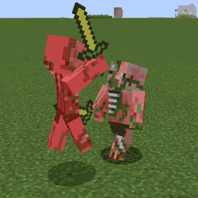
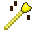
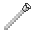
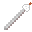
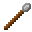
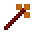
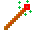
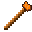
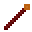

生物大乱斗 Mob Battle Mod
共 13 个条目 · mobbattle
版本: 1.21.1-2.8.0-neoforge · 来源: mobbattle-1.21.1-2.8.0-neoforge.jar
Creative utensils in creating spectacular mob battles
MC百科中文名: 生物大乱斗
MC百科页面: https://www.mcmod.cn/class/1085.html（生物大乱斗 (MobBattleMod)）
MC百科检索: site:mcmod.cn Mob Battle Mod
官方介绍 （Modrinth · 中文版由 GLM AI 翻译，仅供参考）
🗡️ Mob Battle Mod（怪物对战）
你喜欢看怪物对战吗？
想知道哪种怪物才是最强的？那看这里就对了。
这个小模组添加了一些道具，帮你策划（并维持）你梦寐以求的史诗级怪物大战。
本模组适合在创造模式下游玩。所有道具都带有游戏内提示（tooltip），说明它们的使用方法。
📦 道具：
Mob Stick（怪物对战棒）：
让两只怪物互相打起来
Mob Stick Group（群体对战棒）：
让一群怪物围攻单只怪物
Mob Heal（治疗怪物）：
把一只怪物奶回满血
Mob Kill（击杀怪物）：
击杀一只怪物（再也不用敲命令了！）
Mob Effect（清除效果）：
移除所选怪物身上的所有药水效果
Effect giver（效果给予者）：
给一只怪物喂下药水
Armor Editor（装备编辑器）：
有了它，你可以非常轻松地编辑怪物身上的装备
Mob Mount（怪物叠放）：
无需命令即可叠放怪物，也能叠到已经存在的怪物身上。
Mob Army（怪物军团）：
把怪物加入队伍，敌对队伍之间会互相攻击，并且无视其他一切目标。
它使用 Minecraft 自带的计分板（scoreboard）系统，所以你自己也可以加入队伍。如果关闭友军伤害（friendlyfire），同一队伍内的怪物将无法互相伤害。
队伍相比 Mob Stick 的另一个优势在于：Mob Stick 只会设定一次目标，而编入队伍的怪物会自动搜寻敌对队伍。
Mob Equip（怪物拾取）：
让怪物能够自己拾取物品，无需你手动塞给它。
Extended Spawnegg（扩展刷怪蛋）：
模仿普通刷怪蛋，但带有附加功能。 与原版刷怪蛋不同，它可以生成任意怪物。 左键点击一只怪物，就能把这颗刷怪蛋设为生成该种怪物；按住 shift 操作还会复制它的全部数据，生成一只一模一样的副本。
📚 常见问题
幻翼
幻翼会不断重置自己的目标，因此要让它们正常参战，必须把它们编入队伍。不过这一点目前仍有些小毛病，请多加留意
史莱姆
正常情况下，史莱姆只能伤害玩家和铁傀儡。从 2.4.8+ 版本起，史莱姆也可以伤害其他怪物了
凋灵与末影龙
在原版中，亡灵生物无法伤害凋灵，末影龙则只能被玩家或爆炸伤害。 你需要 2.6.0+ 版本才能让其他怪物伤害它们。
被召唤的怪物
会召唤其他怪物的怪物需要编入队伍，才能被正确统计。本模组会尝试检测某只怪物是否由另一只怪物召唤而来，检测方式是查看被召唤的怪物是否带有归属者（owner）。
如果某个模组没有正确设置该属性，这项检测就会失败
由 GLM AI 翻译，仅供参考
查看英文原文（Modrinth）
🗡️ Mob Battle Mod
You like mob battles?
Do you want to know which mob is the strongest one? Then look no further.
This small mod adds in items which will help you in creating (and maintaining) those epic mob fights you sought after.
This is meant to be played in creative mode. All tools have in-game tooltips explaining how they work.
📦 Items:
Mob Stick:
Makes 2 mobs fight each other
Mob Stick Group:
Makes a group of mobs fight another single mob
Mob Heal:
Heals a mob back to full health
Mob Kill:
Kills a mob (no command typing etc anymore!)
Mob Effect:
Remove every potion effect from the selected mob
Effect giver:
Give a mob a potion
Armor Editor:
With it you can edit equipments from mobs really easy
Mob Mount:
Stack mobs without command and on existing mobs.
Mob Army:
Add mobs to a team, opposite teams attack each other and ignore everything else.
It uses minecraft build in scoreboard so you can join a team too. Mobs in same team can't hurt each other if friendlyfire is off.
Another advantage teams have other the mob stick is that the mob stick only sets the target once. Mobs on team will automatically seek out enemy teams.
Mob Equip:
Makes mob able to pickup items without manually giving it to them.
Extended Spawnegg:
Mimicks a normal spawnegg but with additional features. Can spawn any mobs, in contrast to vanilla spawnegg. Left clicking a mob will set the spawnegg to spawn that mob, shift while doing so will also copy all its data to spawn an exact copy.
📚 FAQ
Phantoms
To allow phantoms to attack properly they need to be on teams as phantoms constantly reset their target. This is still kinda buggy though so keep that in mind
Slimes
Normally slimes can only damage players and iron golems. Starting from version 2.4.8+ slimes can now damage other mobs too
Withers + Enderdragons
Withers cannot be damaged by undead mobs and enderdragons can only be damaged by players or explosions in vanilla. You need version 2.6.0+ to allow other mobs to damage them.
Summoned mobs
Mobs that summon other mobs need to be on a team to properly account for that. The mod will try to detect if a mob is summoned from another mob. This is done by checking if the summoned mob has an owner.
If a mod does not set this properly then this detection will fail
资料来源：Mob Battle Mod
物品与方块
mobbattle:boss_bar_adder · 物品
 高级刷怪蛋
高级刷怪蛋mobbattle:egg_ex · 物品

盔甲编辑杖mobbattle:mob_armor · 物品生物组队杖
mobbattle:mob_army · 物品

状态去除杖mobbattle:mob_effect · 物品

状态给予杖mobbattle:mob_effect_give · 物品

生物拾取物品杖mobbattle:mob_equip · 物品

生物激怒杖(多选)mobbattle:mob_group · 物品

生物治疗杖mobbattle:mob_heal · 物品生物击杀杖
mobbattle:mob_kill · 物品

生物骑乘杖mobbattle:mob_mount · 物品

生物激怒杖mobbattle:mob_stick · 物品Perimeter Tool
mobbattle:perimeter_tool · 物品